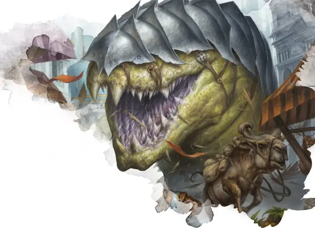

Вурм
Wurm
Огромный Монстр, без мировоззрения

Класс Доспеха 18 (природный доспех)
Хиты 200 (16к12 + 96)
Скорость 50 футов, копая 30 футов
| мод | спас | ||
|---|---|---|---|
| СИЛ | 24 | +7 | +7 |
| ЛОВ | 10 | +0 | +0 |
| ТЕЛ | 22 | +6 | +11 |
| мод | спас | ||
|---|---|---|---|
| ИНТ | 3 | −4 | −4 |
| МДР | 12 | +1 | +6 |
| ХАР | 4 | −3 | −3 |
Чувства слепое зрение 60 футов, пассивное Восприятие 11, чувство вибрации 60 футов
Опасность 14 (11500 опыта)
Бонус мастерства +5
Особенности
Землетрясения. Вурм создает землетрясение, перемещаясь по земле или под землей. Любое существо, оказавшееся в пределах 30 футов от движущегося вурма в первый раз за ход, должно преуспеть в спасброске Ловкости Сл 20, в случае провала получая 10 (3к6) дробящего урона и падая ничком. Любое строение или объект, прикрепленный к земле и оказавшийся в пределах 30 футов от движущегося вурма в первый раз за ход, получает 10 (3к6) урона силовым полем.
Осадное чудовище. Вурм причиняет двойной урон объектам и строениям.
Прокладывание туннеля. Вурм может копать сквозь сплошной камень со скоростью копания, уменьшенной вдвое, оставляя за собой туннель диаметром 10 фт.
Действия
Укус. . Рукопашная атака оружием: +12 к попаданию, досягаемость 10 фт., одна цель. Попадание: 24 (5к6 + 7) колющего урона. Если цель — существо Среднего размера или меньше, она должна преуспеть в спасброске Ловкости Сл 20, иначе будет проглочена вурмом. Проглоченное существо ослеплено и опутано, имеет полное укрытие от атак и других эффектов вне вурма и получает 17 (5к6) урона кислотой в начале каждого хода вурма. Если вурм получает 30 или более урона за один ход от существа внутри него, в конце этого хода вурм должен преуспеть в спасброске Телосложения Сл 21 или извергнуть всех проглоченных существ, которые падают ничком в пространстве в пределах 10 футов от вурма. Если вурм умирает, проглоченное существо больше не опутанно им и может выбраться из трупа, используя 20 футов движения, при выходе падая ничком.
Описание
Вурмы — огромные существа, напоминающие безногих и бескрылых драконов. Они зарываются в землю и едят практически все, что попадется им на пути. Передвижение вурмов является причиной большей части разрушений в засыпанных камнями районах Равники. Вурм прорывается сквозь рыхлую землю, используя глубокие звуковые вибрации, чтобы разжижать землю до житкого состояния перед собой и проплывать через это место. Почва снова затвердевает вслед за движением вурма. Двигаться через скалы труднее и медленнее. В каменной породе вурм оставляет за собой туннель. Кланы Груулов любят разрушения, которые могут создавать вурмы, поэтому кланы иногда заманивают их в цивилизованные районы, где разрушения могут быть просто огромными.